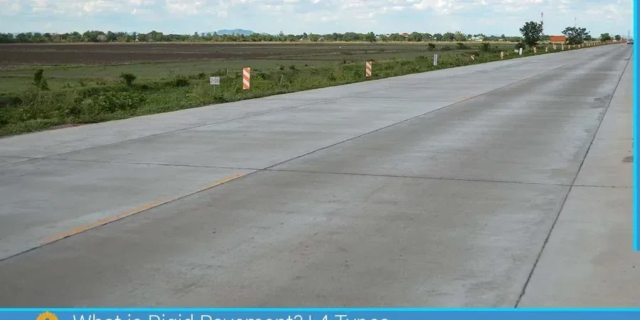

Burnaby grew fast from the 1950s onward. Post-war development pushed roads across the till plains and into the steep slopes of Burnaby Mountain. That legacy still affects pavement performance today. Rigid pavement design in Burnaby has to account for variable subgrade conditions — stiff glacial till on the uplands, soft glaciomarine clay in the valleys near Deer Lake. We've seen projects where a uniform slab thickness led to cracking within two years because the subgrade support changed by 50% across a single block. Before finalizing any rigid pavement design in Burnaby, we always run a placa de carga test to confirm the modulus of subgrade reaction, k, at critical points.

Subgrade k values in Burnaby can vary from 40 to 80 pci within two blocks — joint design must reflect that variability to avoid mid-panel cracking.
Service characteristics in Burnaby
Typical technical challenges in Burnaby
The NBCC 2020 requires site-specific geotechnical investigation for any pavement supporting heavy vehicles. In Burnaby, the biggest risk is differential subgrade support. We've seen slabs crack when a rigid pavement design in Burnaby ignored the transition from till to clay. The solution is not just a thicker slab — it's a variable design. We also watch for frost heave in the till, which can lift joints unevenly. Our team follows CSA A23.3 for concrete structural design and uses the Portland Cement Association method for fatigue analysis. A proper rigid pavement design in Burnaby always includes a dowel retrofit plan for future overlays.
Our services
We provide two complementary services for rigid pavement design in Burnaby:
Subgrade investigation and k-value testing
Plate load tests (ASTM D1196) at multiple locations along the alignment. We correlate results with existing borehole logs from the Burnaby soil map. For clay zones, we add CBR testing to confirm the design modulus.
Structural slab design and joint layout
We produce joint plans, load transfer details (dowel bars, tie bars), and concrete mix specifications. Our designs meet the city's 20-year life requirement and include dowel retrofit provisions for future widening.
Frequently asked questions
What subgrade parameters are critical for rigid pavement design in Burnaby?
The modulus of subgrade reaction (k) is the key parameter. Burnaby's glacial till yields k values of 60–80 pci, while the glaciomarine clay zones around Deer Lake and Still Creek drop to 35–50 pci. We also measure the subgrade's California Bearing Ratio (CBR) to validate frost protection thickness.
How does frost action affect rigid pavement in Burnaby's climate?
Burnaby's freeze-thaw cycles are moderate but persistent. The till subgrade is frost-susceptible when saturated. We design a minimum 300 mm of non-frost-susceptible base below the slab and add a capillary break layer. Joints must allow for thermal movement — we use 4.5 m spacing with 25 mm dowel bars.
What is the typical cost range for a rigid pavement design study in Burnaby?
For a standard municipal road section (two-lane, 500 m long), the cost ranges from CA$2.280 to CA$7.600 depending on the number of plate load tests and complexity of subgrade variability. This includes field testing, laboratory correlation, and a design report with joint details.
Can you retrofit an existing rigid pavement in Burnaby instead of replacing it?
Yes. We evaluate the existing slab condition with falling weight deflectometer (FWD) testing and core samples. If the subgrade is stable but joints are deteriorated, we design a dowel retrofit — drilling and epoxy-grouting dowel bars across transverse cracks. This extends the pavement life by 10–15 years at roughly half the cost of full replacement.